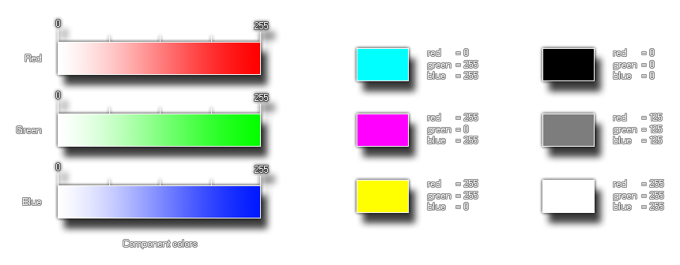

make_color_rgb
Returns a color based on the mix of red, green and blue component values.
Syntax:
make_color_rgb(red, green, blue);
| Argument | Description |
|---|---|
| red | The red component of the color |
| green | The green component of the color |
| blue | The blue component of the color |
Returns : value
Description
GameMaker:Studio provides this function (as well as others) to permit the user to make their own colors. This particular function takes three component parts, the red, the green
and the blue components of the color that you wish to make. These values are taken as being between 0 and 255 so you can make 16,777,216 (256*256*256) colors with this! Below you
can see an image of how these components look when separated :

The image on the left is a break-down of the individual components of the function, and then on the right is an illustration of how changing these components affects the end color.
Example :
col = make_color_rgb(100, 145, 255);
The above code uses the function to create a color and store its value in the variable "col" for later use.